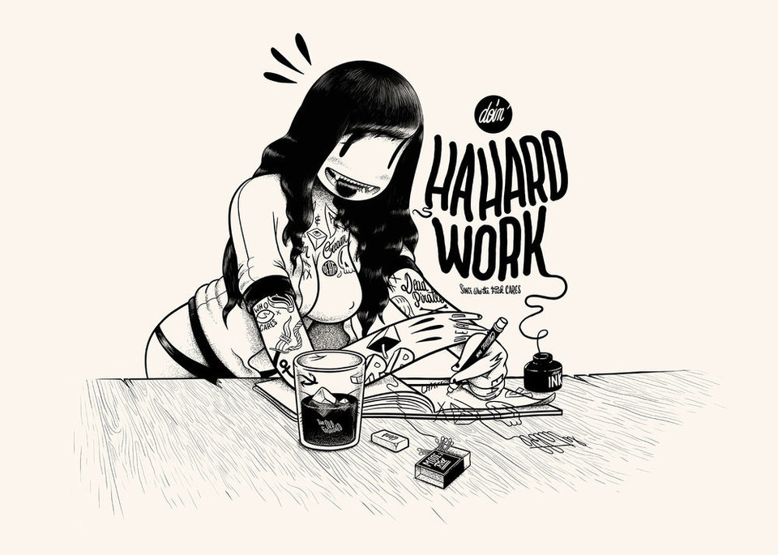
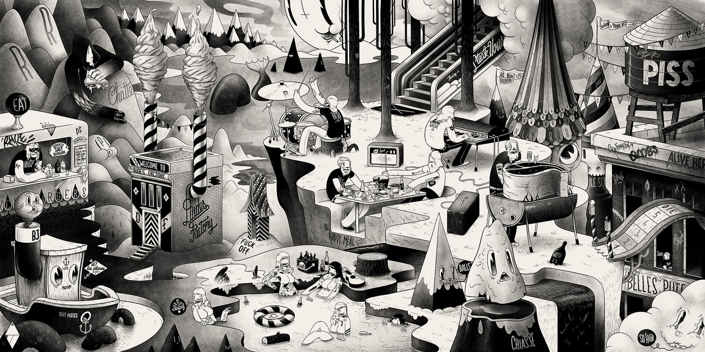
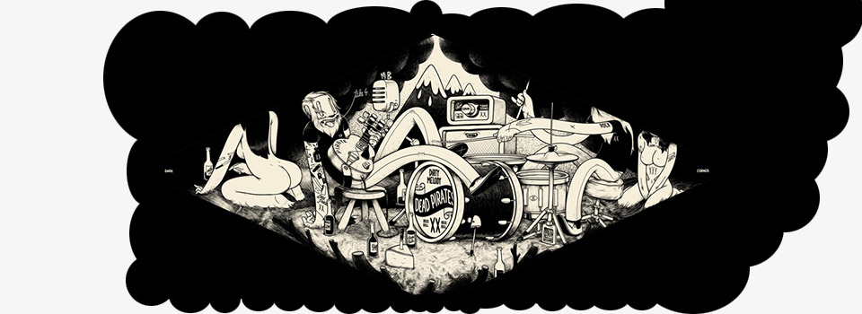
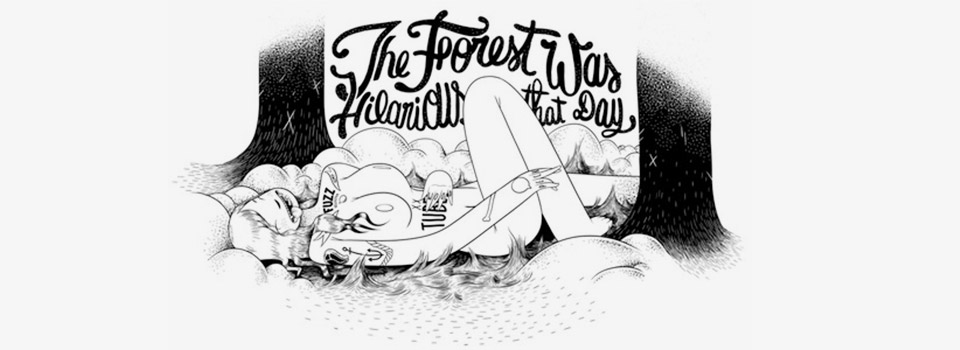
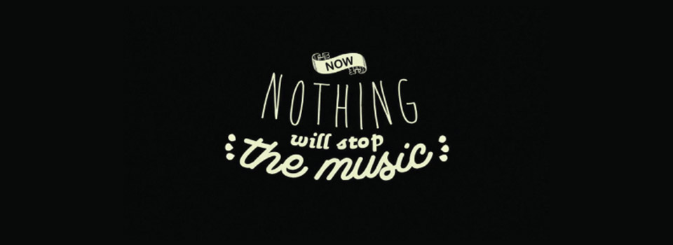

Inicio
Mcbess (Matthieu Bessudo), born July 5, 1984, is a French illustrator living in London. His style is a mix of influences such as Fleischer Studios' old cartoons he updates by using contemporary shapes, symbols, and types. Mcbess's drawings often present himself at the center of a surrealist world filled with food and musical references, such as amps, guitars and records. Mcbess is also a musician in the band "The Dead Pirates."
Volver a inicio

Biografía
Matthieu Bessudo was born in Cannes and raised in Auribeau-sur-Siagne, a small town near Cannes, France. His mother is a primary school teacher in La Roquette-sur-Siagne and his father is a satellite designer. He quickly found interest in music, therefore studied drums for 8 years before choosing guitar as his favorite instrument.
Volver a inicio

Carrera
After graduation, the trio was signed individually as directors by The Mill, an Oscar-winning VFX company based in London.
At the same time, Mcbess started a new series of drawing, giving life to what he describes as the "New Mcbess". With his illustration "My Desk", he defined the new codes of his future illustrations: A mix of influences including old cartoons such as Betty Boop and Merrie Melodies, often in an isometric view, himself being surrounded by surrealist elements, food, and cameos of his own instruments.
Volver a inicio

Expos
Since 2007, Mcbess has been published in several renowned magazines, such as Juxtapoz, Illustrated Ape, and Hi-Fructose. He is very close to Rotopol Press in Kassel, Germany, who are exclusively printing his drawings, after organizing his first own exhibition in their shop in May 2008. He's also been part of exhibitions in London, Hamburg, Tokyo, Los Angeles and Chicago. Mcbess had a solo show at Issue Galerie in 2010, and again at Sergeant Paper Art Store in Paris in 2012.
Volver a inicio

Música
Mcbess used to be the lead guitarist of a local band called Diztrait. They performed a gig at the MJC Ranguin in Cannes, on November 6, 2004.[6] Mcbess recently teamed-up with his friend Simon Landrein at The Mill, and created the music-video "Wood (Dirty Melody)" for his own band, the Dead Pirates. The clip quickly spread over the Internet, and has been featured in Wired and the popular 3D film blog Motionographer.
Volver a inicio
